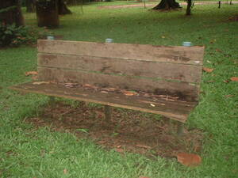

bangkù 
/baŋkuʔ/
n.
“seat”
1.
n.
bench
Iyan ka malayat ne pinnuuwan ne innimu puun te minsan nekey. Egkaayun ne innimu puun te kayu, putew, damuluwan, wey duma pad. Egkaayun ne due sandihanan wey egkaayun degma ne warè.
Sikeddiey rè ka warè nakapinnuu te bangkù su napenu e nasì.
Only I wasn't able to sit down on the bench it was filled.
Wrd.Gloss: bench
Eng. bench; table?
Tag. bángkò
Ceb. bangkù; lingkuranan
Ilo.: bánko
OCM: Furniture (352)
Online dict status: -
Usage level: L,B
2.
n.
chair
Ka seini ne klasi te pinnuuwan sabeka rè ka egpakapinnuu wey innimu puun te minsan nekey ne egkaayun ne due egsandihan wey se warè. Me hep-at iya ka paa.
Mareet ka pinnuuwan ku su warè sandihanan.
My chair is not presentable because it has no back.
Wrd.Gloss: chair
Eng. chair
Tag. sílya
Ceb. silya
Ilo.: sílya
OCM: Furniture (352)
Online dict status: -
Usage level: L,B
3.
n.
stool
Ka seini ne klasi te pinnuuwan sabeka rè man-e ka egpakapinnuu wey warè iya sandihanan wey innimu puun te minsan nekey. Senge kakuwa tatelu rè ka paa.
Kuneen ku te egsuladlad ke due sandihanan te bangkù ku sikan naa ka migtabey-ang e rè iya.
I fall off on the stool for I'm thinking it has a back that's why I leaned on.
Wrd.Gloss: stool
Eng. stool
Tag. bankítò
Ceb. bangkito
Ilo.: bankíto
OCM: Furniture (352)
Online dict status: -
Usage level: L,B
Updated by: RJH,TME,QDL,NJK,QDL
Last updated: 02/Dec/2009
This page last updated: 19/May/2012
Copyright © 2009-2010, Matigsalug Language Christian Association, Inc